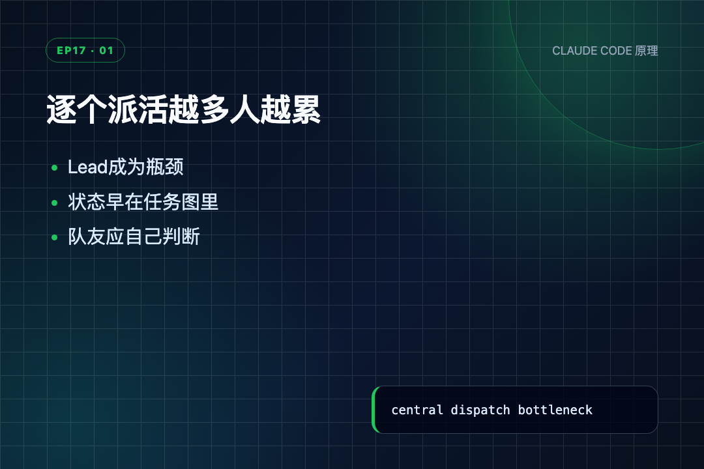
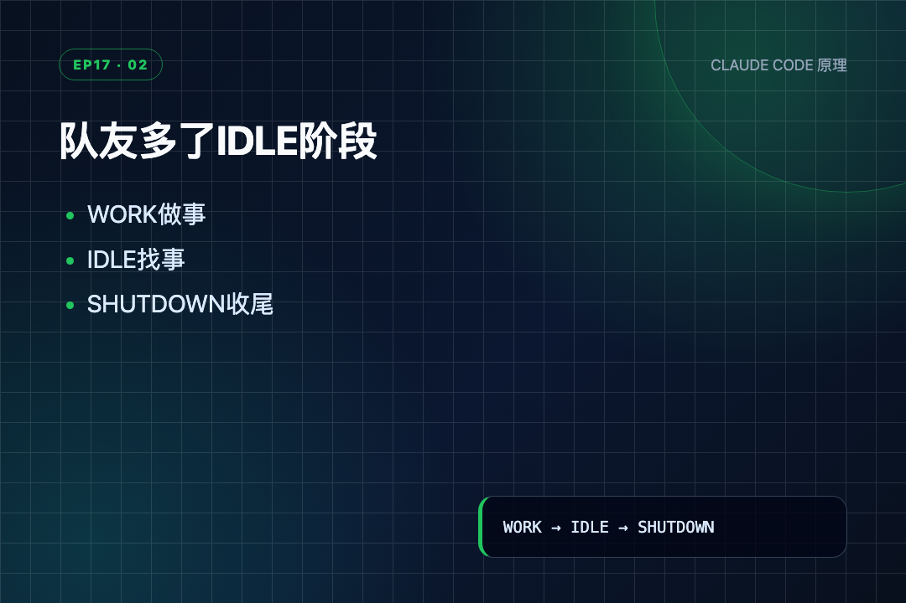
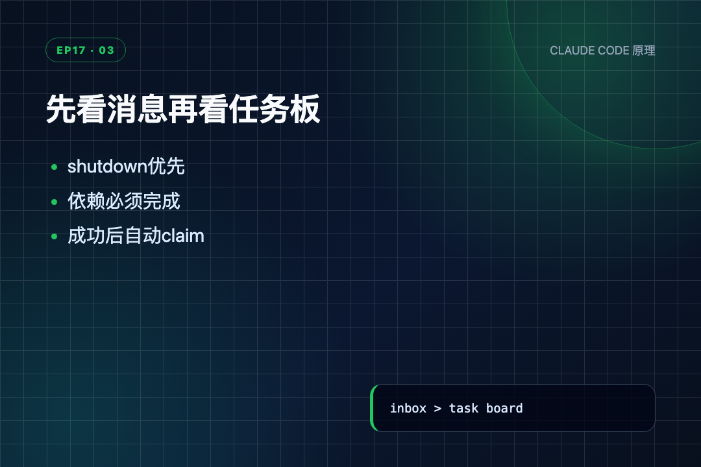
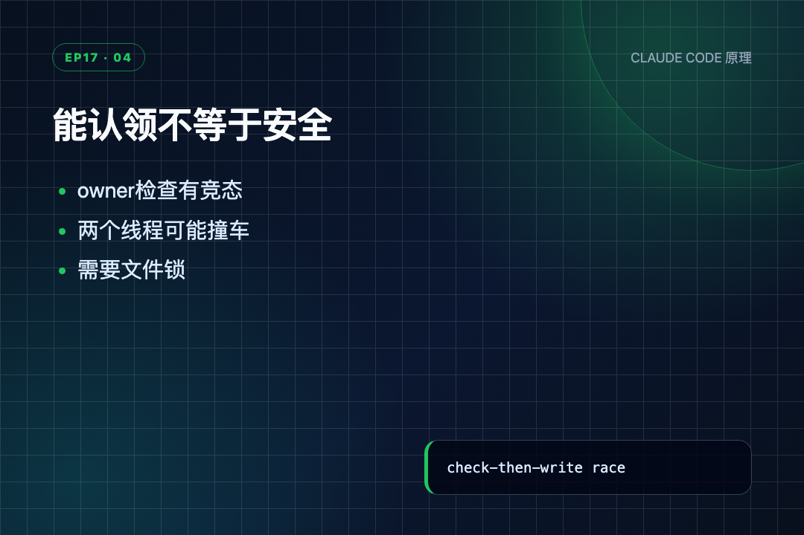
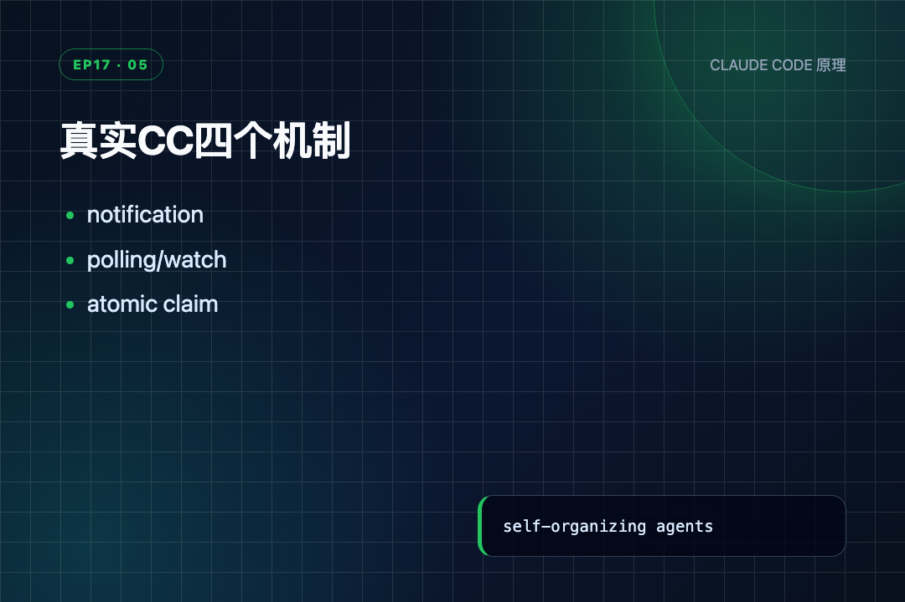

任务板上已经放着活，Alice 却在等 Lead 点名，Lead 又在逐个问“谁空着”。团队人数越多，协调者越忙——这种场面我在项目群里见过，没想到读 Agent 源码还能再见一次。
s16 刚解决的是“怎么把一次请求和一次回复配对”：队友做完后进入 idle，仍会轮询收件箱，能接收关机与审批消息。这里有个容易说错的地方：idle 不是 s17 新增的，s16 已经有了。
s17 真正往前走的一步，是在 idle 里多看一个地方。收件箱没有新消息时，队友继续扫描共享任务文件；发现一个 pending、没人认领、依赖已完成的任务，就自己写上 owner，回到工作阶段。
自治不是“模型自己想做什么”，而是空闲队友按固定规则从共享任务板领取下一件可做的事。
● ● ●
先把前后关系理顺。
s16 的队友在 LLM 返回非 tool_use 后，会每秒轮询 inbox；有普通消息就追加到 messages 继续工作，有 shutdown_request 就回复并退出。它已经不是“做完立刻消失”。
但它只会等 Lead 发消息，不会主动看 .tasks/。所以任务板上即使有十个任务，Lead 仍要手动通知每个队友。
s17 新增的核心不是“能 idle”，而是“idle 时扫描、认领，以及超时”。这点必须以 code.py 为准，不能把 README 里“s16 做完就退出”的概括照搬进结论。

逐个派活越多人越累
● ● ●
共享任务板就是 .tasks/ 目录，每个任务一个 JSON 文件。s17 用 scan_unclaimed_tasks() 扫描：
def scan_unclaimed_tasks() -> list[dict]: """Find pending, unowned tasks with all dependencies completed.""" # 扫描任务板，返回所有可被认领的候选任务 unclaimed = [] for f in sorted(TASKS_DIR.glob("task_*.json")): # 逐个读取任务 JSON task = json.loads(f.read_text()) if (task.get("status") == "pending" and not task.get("owner") and can_start(task["id"])): # 三个条件全满足才加入候选：未开始、无人认领、依赖已完成 unclaimed.append(task) return unclaimed
条件一个都不能少：
status == "pending"：任务还没开始，也没完成。not task.get("owner")：没有其他 Agent 已经负责。can_start(task["id"])：blockedBy 里的前置任务全部 completed。有依赖不等于不能做；依赖还没完成才不能做。例如 write api 依赖 setup schema，schema 完成之前扫描不到 API；一旦 schema 变 completed，API 就会出现在下一次扫描结果里。
文件按名字排序，后面总是取 unclaimed[0]。所以教学版没有优先级、能力匹配和负载评分，只做“按文件顺序领第一个可做任务”。
can_start() 沿用任务系统的安全默认值：
def can_start(task_id: str) -> bool: # 重新加载任务 task = load_task(task_id) for dep_id in task.blockedBy: # 依赖文件不存在，直接判定不能开工 if not _task_path(dep_id).exists(): return False # 前置任务未完成 if load_task(dep_id).status != "completed": return False return True
依赖文件不存在也返回 False。任务 ID 写错时宁可卡住，也不跳过依赖直接开工。
● ● ●
扫描只是发现候选项，真正占住任务的是 claim_task()：
def claim_task(task_id: str, owner: str = "agent") -> str: # 先重新加载，避免用了过期的快照 task = load_task(task_id) if task.status != "pending": # 状态不是 pending，说明已被开始或完成，直接拒绝 return f"Task {task_id} is {task.status}, cannot claim" if task.owner: # 已有 owner，说明别的 Agent 已负责，直接拒绝 return f"Task {task_id} already owned by {task.owner}" if not can_start(task_id): # 再次检查依赖，因为扫描后状态可能已变 deps = [d for d in task.blockedBy if _task_path(d).exists() and load_task(d).status != "completed"] missing = [d for d in task.blockedBy if not _task_path(d).exists()] parts = [] if deps: parts.append(f"blocked by: {deps}") if missing: parts.append(f"missing deps: {missing}") # 失败信息分两类：未完成 vs 根本不存在 return "Cannot start — " + ", ".join(parts) # 写入认领者名字 task.owner = owner # 状态从 pending 改为进行中 task.status = "in_progress" # 落盘，其他 Agent 扫描时会看到 owner save_task(task) print(f" \033[36m[claim] {task.subject} → in_progress\033[0m") return f"Claimed {task.id} ({task.subject})"
逐段看：
can_start()，避免扫描后依赖状态发生变化。owner 写成 Agent 名字，状态改为 in_progress 并保存。认领不是在内存里说一句“我来做”，而是把共享任务文件改掉。 下一位队友扫描到 owner 已存在，就不会再把它列为候选。
失败信息也分成两类：blocked by 表示前置任务存在但没完成，missing deps 表示依赖文件根本不存在。这样 Lead 能区分“再等等”和“任务图写坏了”。

队友多了IDLE阶段
● ● ●
idle_poll() 先看消息，再看任务板s17 的调度入口是 idle_poll()。idle 在这里就是“当前没有模型工具调用，线程每隔几秒检查有没有新事情”。
# 每轮轮询间隔 5 秒 IDLE_POLL_INTERVAL = 5 # 60 秒无事可做就超时退出 IDLE_TIMEOUT = 60 def idle_poll(agent_name: str, messages: list, name: str, role: str) -> str: """Poll for 60s. Return 'work', 'shutdown', or 'timeout'.""" # 共循环 12 轮（60÷5），每轮睡 5 秒 for _ in range(IDLE_TIMEOUT // IDLE_POLL_INTERVAL): # 先等待再检查 time.sleep(IDLE_POLL_INTERVAL) # Check inbox — dispatch protocol messages first # inbox 必须排在任务板之前 inbox = BUS.read_inbox(agent_name) if inbox: for msg in inbox: # 收到关机请求 if msg.get("type") == "shutdown_request": req_id = msg.get("metadata", {}).get("request_id", "") BUS.send(name, "lead", "Shutting down gracefully.", "shutdown_response", {"request_id": req_id, "approve": True}) # 立刻返回，不再扫任务板 return "shutdown" # 普通消息包进 <inbox> 给模型看 messages.append({"role": "user", "content": "<inbox>" + json.dumps(inbox) + "</inbox>"}) print(f" \033[36m[idle] {name} found inbox messages\033[0m") # 回到工作阶段 return "work"
循环次数是 60 // 5 = 12，每轮先睡 5 秒，再查一次。
为什么 inbox 要排在任务板之前？ 因为里面可能有 s16 的 shutdown_request。如果每次先领新任务，关机消息就可能长期排在后面；现在一旦收件箱有关机请求，队友立刻回复并返回 shutdown。
普通消息则被包进 messages 后返回 work。说白了，就是把新消息塞进队友对话，让下一次 LLM 调用看见。
收件箱为空才继续扫描任务板：
# Scan task board # 收件箱为空才扫任务板 unclaimed = scan_unclaimed_tasks() if unclaimed: # 教学版只取第一个候选，不做优先级 task = unclaimed[0] result = claim_task(task["id"], agent_name) # 必须检查认领是否真的成功 if "Claimed" in result: messages.append({"role": "user", "content": f"<auto-claimed>Task {task['id']}: " f"{task['subject']}</auto-claimed>"}) print(f" \033[32m[idle] {name} auto-claimed: " f"{task['subject']}\033[0m") # 成功认领，回工作阶段 return "work" print(f" \033[33m[idle] {name} claim failed: " f"{result}\033[0m") print(f" \033[31m[idle] {name} timeout ({IDLE_TIMEOUT}s)\033[0m") # 12 轮都没消息、没任务，超时退出 return "timeout"
这段时序很紧：
claim_task() 真正写 owner/status。Claimed，成功才追加 work，外层循环重新调用 LLM。

先看消息再看任务板
● ● ●
认领之后，队友用新增的 complete_task 完成任务：
def complete_task(task_id: str) -> str: # 重新加载任务 task = load_task(task_id) if task.status != "in_progress": # 只有进行中的任务才能完成 return f"Task {task_id} is {task.status}, cannot complete" # 标记完成 task.status = "completed" # 落盘 save_task(task) unblocked = [t.subject for t in list_tasks() if t.status == "pending" and t.blockedBy and can_start(t.id)] # 扫描下游任务，找出依赖刚被解锁的项目 print(f" \033[32m[complete] {task.subject} ✓\033[0m") msg = f"Completed {task.id} ({task.subject})" if unblocked: # 把新解锁的任务名追加到返回值 msg += f"\nUnblocked: {', '.join(unblocked)}" return msg
只有 in_progress 能完成。写成 completed 后，函数扫描所有 pending 且有依赖的任务，再调用 can_start() 找出现在已解锁的项目。
比如：
setup schema [in_progress, owner=alice] write api [pending, blockedBy=schema]
Alice 完成 schema 后，write api 的依赖全部满足，返回值增加 Unblocked: write api。下一次任何空闲队友调用 scan_unclaimed_tasks()，就能看见它。
complete 不会直接把下游任务派给 Alice，只是让它从“不可见”变成“可认领”。到底由谁认领，取决于下一次扫描和写文件的先后。
● ● ●
这些函数最后在队友线程的外层循环会合：
# Outer loop: WORK → IDLE cycle while True: if len(messages) <= 3: # 消息过少时重新插入身份，防止压缩后队友忘了自己是谁 messages.insert(0, {"role": "user", "content": f"<identity>You are '{name}', role: {role}. " f"Continue your work.</identity>"}) # WORK phase should_shutdown = False for _ in range(10): # read inbox → call LLM → execute tools # 工作阶段，最多 10 轮 ... if response.stop_reason != "tool_use": # 模型不再调用工具，说明当前工作做完 break if should_shutdown: break # IDLE phase # 进入空闲阶段 idle_result = idle_poll(name, messages, name, role) if idle_result == "shutdown": break if idle_result == "timeout": # 超时也跳出，给 Lead 发 summary 后结束线程 break
这里的三个阶段可以直接翻成人话：
len(messages) <= 3 时还会重新插入身份。作者是为了防止压缩后队友忘了自己是谁；这个检测很粗糙，短对话也可能误触发，但不影响本节认领主线。
完整路径是：
Lead 提前创建共享任务 ↓ Alice 的当前 LLM 工作结束 ↓ 进入 idle_poll() ① inbox 优先：关机 / 普通消息 ② inbox 为空：scan_unclaimed_tasks() ③ pending + owner为空 + can_start ④ claim_task() 写 owner=alice、status=in_progress ⑤ <auto-claimed> 追加到 messages ↓ 返回 WORK，LLM 看到任务并调用工具 ↓ complete_task() 写 completed ↓ 依赖它的任务在下次扫描中可见 ↓ 60 秒无新工作 → timeout → summary → 退出
任务图在 s12 只是“记录依赖”，到 s17 才真的进入空闲队友的选活逻辑。
● ● ●
前面拆了很多函数，容易看散。下面把整个系统串成一张图——Lead、Alice、Bob 和任务板之间，到底谁看谁、谁写谁：
┌──────────────────────────────────────────────────┐
│ Lead │
│ ① spawn_teammate(alice, backend) │
│ ② spawn_teammate(bob, frontend) │
│ ③ create_task("setup schema") │
│ ④ create_task("write api", blockedBy=schema) │
│ 发完就不管了，去忙别的 │
└──────────────┬───────────────────────────────────┘
│ 创建邮箱文件 + 创建任务文件
▼
┌─────────────────────┐ ┌──────────────────────┐
│ 📨 邮箱目录 │ │ 📋 任务板 .tasks/ │
│ .mailboxes/ │ │ │
│ ├── alice.jsonl │ │ task_001 schema │
│ ├── bob.jsonl │ │ [pending, owner=] │
│ └── lead.jsonl │ │ task_002 api │
└─────────────────────┘ │ [pending, owner=] │
│ blockedBy=task_001 │
└──────────┬────────────┘
│ 扫描
┌──────────────────────────┼──────────────────────┐
▼ ▼ ▼
┌──────────────────┐ ┌──────────────────┐
│ 👩 Alice │ │ 👨 Bob │
│ │ │ │
│ WORK: 干活 │ │ WORK: 干活 │
│ ↓ 做完了 │ │ ↓ 做完了 │
│ IDLE: 每5秒检查 │ │ IDLE: 每5秒检查 │
│ ① 查邮箱 │ │ ① 查邮箱 │
│ ② 查任务板 │ │ ② 查任务板 │
│ ↓ │ │ ↓ │
│ scan 找到 │ │ scan 找到 │
│ schema(可做) │ │ api(还被阻塞) │
│ claim → 干活 │ │ 继续等 │
│ complete ✓ │ │ │
│ ↓ │ │ ↓ │
│ 下游 api 解锁！ │──────→│ scan 发现 api │
│ │ │ claim → 干活 │
│ 发 summary 给Lead │ │ complete ✓ │
└────────┬──────────┘ └────────┬──────────┘
│ │
└────────────┬───────────────┘
▼
┌──────────────────────┐
│ Lead 读 lead.jsonl │
│ 看到 alice/bob 汇报 │
│ 下一轮模型决策 │
└──────────────────────┘
关键三条线：
Lead 只负责建任务和收汇报，不逐个点名；队友靠扫任务板自己找活干。
● ● ●
光看代码没感觉，跑一下。
先创建两个有依赖关系的任务：setup schema 和 write api，后者 blockedBy 前者。然后扫描看看现在能认领什么：
s17 >> Create schema -> api dependency and let alice find work scan before: ['setup schema']
只有 setup schema 出现，write api 被依赖挡住了。scan_unclaimed_tasks() 要求 status=pending、owner 为空、且 can_start() 确认依赖全部完成——API 的依赖还没做完，所以不在候选里。
Alice 认领并完成 schema：
[claim] setup schema → in_progress Claimed task_..._6120 (setup schema) [complete] setup schema ✓ Completed task_..._6120 (setup schema) Unblocked: write api
最后那行 Unblocked: write api 是关键——complete_task() 完成后立刻检查下游，发现 API 的依赖已经满足，于是主动报告"解锁了一个新任务"。
再扫一次：
scan after schema completed: ['write api'] [claim] write api → in_progress Claimed task_..._3486 (write api)
同样的扫描函数，schema 完成前后返回了完全不同的候选。这就是任务图从"只记录依赖"变成"真正参与调度"的证据。
一句话：队友不用等 Lead 派活，自己扫任务板就能找到能干的事；做完一个，依赖它的任务自动解锁。
● ● ●
claim_task() 虽然重新检查 status、owner 和依赖，但整个过程是：
读取 JSON → 检查 pending / owner → 修改内存对象 → 覆盖写回 JSON
这里没有文件锁。Alice 和 Bob 可能同时读到 pending、owner=None，都通过检查，然后先后写回；最后写入者会覆盖前一个 owner。
这就是常见的“检查时没问题，使用时已经变了”：检查和写入不是一个不可分割动作。owner 检查减少了普通重复认领，却不能保证并发安全。

能认领不等于安全
另外，idle_poll() 取候选列表中的第一项，不会根据 role 匹配任务能力；complete_task() 也不验证调用者就是 owner。它们都是教学版为了突出“扫描—认领—解锁”而留下的简化。
● ● ●
idle_pollREADME 对真实实现给了三组文件级入口：inProcessRunner.ts、hooks/useTaskListWatcher.ts、utils/tasks.ts。
真实 CC 的空闲机制不是一个函数包办，而是四部分配合：
sendIdleNotification() 先告诉 Lead“我空了”。waitForNextPromptOrShutdown() 每 500ms 检查用户消息、邮箱和任务列表。useTaskListWatcher() 监听任务目录变化，新任务出现或依赖解锁后触发检查。tryClaimNextTask() 在等待期间仍会主动找任务，不是只等 watcher 推送。真实实现既有“文件变了就通知”的被动路径，也有“等待时自己查”的主动路径。两条路并存，减少漏事件与延迟。
认领部分更关键。claimTask()（utils/tasks.ts:541-612）用 proper-lockfile 锁住任务文件，在锁内重新读取、检查 owner/completed/blockedBy，再写 owner。claimTaskWithBusyCheck()（utils/tasks.ts:614-692）再加一层 task-list 锁，把“Agent 是否已有其他任务”和“认领新任务”放进同一个受保护区域。
这正面补上教学版的竞争窗口：不是先在锁外看一眼再写，而是锁住之后重新看、再改。

真实CC四个机制
● ● ●
s17 的变化看起来只有两个新函数，实际把任务系统从“Lead 看得懂的列表”变成了“队友自己会消费的共享队列”：
scan_unclaimed_tasks() 只返回 pending、无 owner、依赖已完成的任务。claim_task() 把 owner 和 in_progress 写回文件，成功后才把任务追加到模型消息。complete_task() 写 completed，并让下游任务在下一次扫描中出现。我读完这节最大的改观是：所谓 Agent 自治，落到代码里往往不是“放开让它自己决定”，而是把可领取范围、依赖条件、状态写入和退出条件规定得更清楚。
下一节的问题已经从日志里冒出来了：Alice 和 Bob 能各自认领任务，但 write_file("config.py") 仍指向同一个仓库目录。谁做什么分开了，在哪里做还没分开。s18 会用 Git worktree 把任务绑定到独立分支和独立目录。
源码地址：https://github.com/shareAI-lab/learn-claude-code